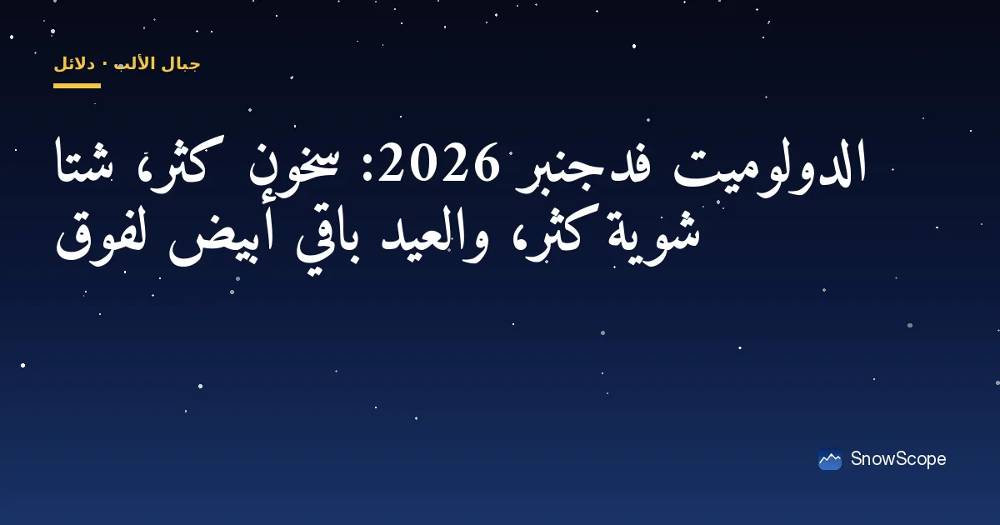
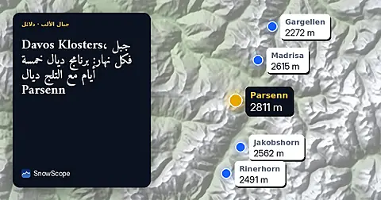
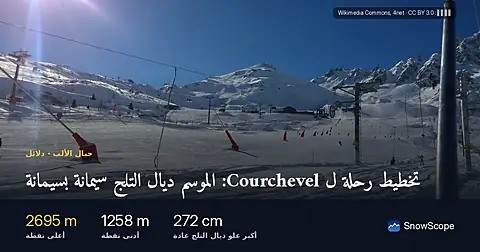

الدولوميت فدجنبر 2026: سخون كثر، شتا شوية كثر، والعيد باقي أبيض لفوق
دجنبر فـ جبال دولوميت غيكون أسخن وشويـة أكثر رطوبة من الشتوات اللي فاتو. الخريطة ديال SnowScope توري ما فمـاش إشارة واضحة فـ أغلب الجبل، وفيه 42 % يقولو التلج غيكون أقل، لكـن عيد الميلاد غيبقى تلج بـزاف فـ منتصف الجبل.
شوف توقعات التلج مباشرة ديال Dolomites فالتطبيق ديال SnowScopeالعلو ديال التلج، التنبيهات والخريطة 3D، فابور.

الخريطة ديال التلج توري قصة مختلطة
فاش نقارنو جبال دولوميت منطقة بـ منطقة مع دجانبرها اللي فاتو، الصورة غير واضحة. فـ كول الجبل، 58 % ما فمـاش إشارة واضحة. البـاقي 42 % يقول التلج غيكون أقل، أغلبـو فـ الودايان ديال Pustertal الشمالية والجنوب الشرقي فـ Cadore. ما فمـاش منطقة فـ الجبل توري أن التلج غيكون أكثر.
الاحتمالات ديال تلج جديد أكثر من العادي فـ دجنبر بـاقيـو متوسطة: بين 34 % و 46 %، والقيمة الوسطية 41 %. يعني تلج جديد أكثر من العادي ممكن، لكـن ليس الاحتمال الأكثر.
شنو اللي يخلي دجنبر أسخن
واحد وخمسين توقع موسمي من المركز الأوروبي للتطقع قالو أن دجنبر غيكون حوالي 1.7 °C أسخن من العادي. تمـانية من عشرة توقعات توري تدفية. الأمطار فـ 12 % فـ الفوق من المعادل العادي ديال 70 ملم، لكـن الآراء مختلفة: 53 % من التوقعات تقول أمطار أكثر.
فـ جبال دولوميت، التلج الكتير يجي فاش العواصف تجي من الجنوب. فاش الشهر يكون أسخن، خط التلج يصعد لفوق، والمطر اللي كان ممكن يكون تلج لتاح يصير مطر بدل. منتصف الجبل والفوق يقبضو أكثر تلج، والودايان تاعتماد أكثر على التلج الصناعي.


توقعات التلج الجديد والعلو ديال دجنبر
فـ المحطات الكبيرة—Val Gardena, Alta Badia, Cortina d'Ampezzo, Val di Fassa و Seiser Alm—دجنبر العادي يجيب 24 سم تلج جديد فـ منتصف الجبل. هاد التوقع يقول 21 سم. ليـوم 31 دجنبر، العمق العادي هو 33 سم؛ التوقع هو 30 سم. هاد الأرقام قريبة من العادي، ضمن التغييرات الطبيعية.
الاحتمال ديال انهاء الشهر مع تلج أكثر من العادي هو 41 %. يعني رغم أن احتمالات أقل موجودة، التوقع ما يقول أن دجنبر غيكون رقيق. الكتير راه يتعلق بـ متى تجي العواصف وشنو قوتهم.
تلج عيد الميلاد فـ Val Gardena
Val Gardena فـ منتصف الجبل (1882 م) شفنا تلج قلّـو 5 سم فـ 25 دجنبر فـ 42 من آخر 45 شتاء—احتمال 93 %. هاد التوقع يخليـو عالي: 91 % من التوقعات الموسمية توري عيد ميلاد تلج. العمق المتوقع فـ 25 دجنبر هو 25 سم، أقل شويـة من العادي 27 سم، لكـن تاع التزلج براحة.
الجهات الفوقانية فـ جبال دولوميت أكثر تلج فـ عيد الميلاد. قواع الودايان فـ دجنبر سخون هي المناطق غير الواضحة؛ عادي تاعتمد على التنظيف والتلج الصناعي.
دجنبر هاد قاش بـ الشتوات اللي فاتو
الدجانبر اللي فاتو اللي فيهم نموذج توقع شبـه هاد الصورة هما 2014, 2023 و 2013. ما واحد منهم ما كان تلج كتير أو تلج قليل؛ كانو أشهر عادية مع تلج متوسط والعمق متوسط. هاد يقول اللي غندير: توقع دجنبر فـ المنتصف ديال النطاق العادي.
واحد الشيء مهم: نظام عاصفة واحد من الجنوب يقدر يغير المجموع ديال الشهر ب 10 سم أو أكثر. التوقع ديال 7 ايام غيكون أحسن دليل فاش نظام ما يقرب؛ تفرج علـى التوقيت والمسار براحة.
نصايح للي كيتزلجو
- خطط أيام بداية دجنبر فـ المصاعد والجهات الفوقانية، فاش التلج أكثر أمان من الودايان.
- شوفـ التوقع ديال 7 ايام كول الأسبوع باش نعواصف جنوبية، اللي قادرة تجيب تلج كتير لـ جبال دولوميت.
- قارن الخريطة ديال SnowScope فـ ودايان مختلفة: خط التلج يقدر يتحرك ب مئات الأمتار بين Pustertal و Val di Fassa فـ فترة سخونة.
- إذا عندك برنامج عيد ميلاد، احجز التضاريس ديال منتصف الجبل والفوق بـ ثقة؛ البيستات ديال الودايان غتكون أكثر اعتماد على التنظيف.
- جيب طبقات قماش ديال دفاية لكن توقع أحوال متغيرة؛ 1.7 °C فـ الفوق معناه بعض البيستات قادرة تقدح قشرة مطر فـ بكري قبل لما تقسي.
على هاد الأرقام
العلو ديال التلج فالمحطات هو أكثر تلج فالجهة الفوقانية فالتاريخ المكتوب؛ هادو تقديرات لمنطقة، ماشي قياس فنقطة وحدة. التوقعات يمكن تتبدل. ديما شوف النشرة الرسمية ديال الانهيارات قبل ما تخرج من البيست.
كيفاش تستاشهد بهاد المقال
للبحث، التعليم ولا الصحافة: الأرقام والرسومات تقدر تعاود تخدم بيهم بحرية تحت CC BY 4.0 مع هاد الاستشهاد.
SnowScope (2026), الدولوميت فدجنبر 2026: سخون كثر، شتا شوية كثر، والعيد باقي أبيض لفوق, https://snowscope.app/blog/ar/2026/11/dolomites-december-2026-snow-outlook.html, تشاف ف 2026-11-10
SnowScope (Atlas Labs). (2026, November 10). الدولوميت فدجنبر 2026: سخون كثر، شتا شوية كثر، والعيد باقي أبيض لفوق. SnowScope snow reports. https://snowscope.app/blog/ar/2026/11/dolomites-december-2026-snow-outlook.html
BibTeX
@misc{snowscope2026dolomitesdecember2026sno,
author = {{SnowScope (Atlas Labs)}},
title = {الدولوميت فدجنبر 2026: سخون كثر، شتا شوية كثر، والعيد باقي أبيض لفوق},
year = {2026},
month = nov,
howpublished = {\url{https://snowscope.app/blog/ar/2026/11/dolomites-december-2026-snow-outlook.html}},
note = {Published 2026-11-10 12:17 UTC; accessed 2026-11-10}
}· CC BY 4.0 · الطريقة، الداتا والأدوات →
تابع Dolomites
فابور: ميساج ملي يجي التلج، والتوقعات كل صباح.
تقارير أخرى ديال التلج

Davos و Klosters كيتقاسمو ستة ديال الجبال ديال التزلج. برنامج نهار بنهار، كيبدا ب Parsenn، مع شنو كيقول التاريخ ديال التلج ديالنا ف 46 شتوة اللي فاتت على العلوات ديالو.

إمتى تحجز Courchevel و 3 Vallées، أشمن قرية تختار وفين كيبقى التلج، من 46 شتوة اللي فاتت.

Cortina d'Ampezzo بتلاتة ديال الطرق: Tofana، Faloria-Cristallo و Cinque Torri-Lagazuoi، مع 46 شتوة ديال المعطيات فتلاتة ديال العلوات.